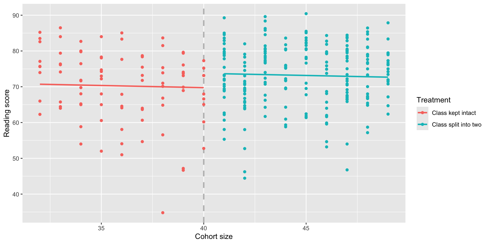
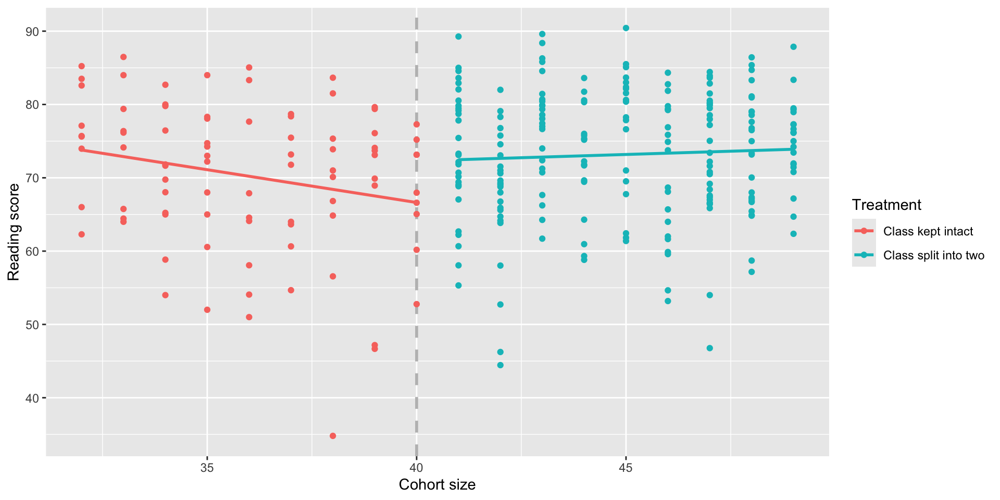

The limitations of Randomized Controlled Trials (RCTs)
Although they are powerful for inferring causation, RCTs are hard to pull off:
They can be incredibly expensive (e.g., Phase 3 clinical trial)
Compliance with the treatment protocol isn’t perfect (e.g., low-calorie diet, picking up the phone)
It can be hard to generalize beyond the participants involved in the study if they aren’t representative (e.g., psychology experiments conducted on college students)
They can be impractical (e.g., effect of education on later earnings) or even unethical (e.g., seatbelts, parachutes, medical trials)
“Faking” randomization
Key idea: Find a comparison group that is effectively “the same as” the treatment group to create a: quasi-experiment or natural experiment.
Does serving in the military affect long-term earnings?
Does serving in the military have an impact upon your long-term earnings after discharge?
Why this won’t work: Compare the wages of people who served in the US military in Afghanistan or Iraq, 10 years after discharge, to the wages of the general public.
A natural experiment on the effect of military service on earnings
Angrist (1990) wanted to determine what effect military service had on future earnings
“Treatment” group: men selected by lottery to serve in Vietnam “Control” group: men eligible to be drafted but not selected to serve
We effectively have (almost) random assignment
This is called a natural experiment because we have discovered something close to an RCT “in the wild”
For white men, earnings in the 1980s were 15% lower in the treatment group; military service in Vietnam causally reduced long-term earning power
Quasi-experiments / Natural experiments
These are called quasi-experiments or natural experiments because participants are not randomly assigned to treatment and control groups,
but groups are selected in such a way that the assignment can be thought of as effectively random.
A natural experiment of the minimum wage
Why can’t we just compare the unemployment rate in places with a low minimum wage (e.g., Texas) to places with a high minimum wage (e.g., California)?
Why can’t we just do a randomized controlled trial to study the impact of raising the minimum wage?
A natural experiment of the minimum wage
In 1992, New Jersey’s minimum wage went from $4.25 to $5.05
The minimum wage in Pennsylvania remained at $4.25
Researchers measured employment at 410 fast food restaurants in NJ and PA both before and after the change
This is a natural experiment because the two groups arose naturally (rather than being assigned by the researchers)
NJ vs PA comparison
After
Pennsylvania
21.17
New Jersey
21.03
Difference
-0.14
After the policy change, employment was 0.14 employees per store less in NJ than in PA. Can we interpret this as a causal effect?
No! We cannot distinguish the effect of the minimum wage increase from other differences between PA and NJ.
Difference-in-differences
Before
After
Difference
Pennsylvania
23.33
21.17
-2.16
New Jersey
20.44
21.03
0.59
Difference
-2.89
-0.14
2.76
The difference of the differences (-0.14-(-2.89) or 0.59-(-2.16)) gives us the causal effect of the policy change.
Ways to create natural experiments
Geographic boundaries (e.g., NJ vs PA minimum wage example)
Policy changes (e.g., financial aid policy change example)
Lotteries (e.g., Vietnam draft lottery example)
Arbitrary cutoffs
Do flagship state university grads earn more money?
Why can’t we answer this question by comparing average income or wealth of (say) Texas Exes to non-Texas Exes?
Why can’t we do a Randomized Controlled Trial?
Regression discontinuity designs
Hoekstra (2009) studied admission to a state flagship university with an SAT cutoff for admission
Key idea: Compare earnings 15 years after graduation for students that just made the admissions cutoff (and were accepted)
to those that just missed it (and were rejected)
Regression discontinuity design example
Build two regressions predicting Y = earnings measure from X = SAT score: one for students below the cutoff and one for students above
The length of the red line between the curves is the causal effect of admission
Is there a benefit to small class sizes?
Many people argue that smaller classes lead to better learning outcomes compared to large classes
But why can’t we just compare test scores of students in small classes and students in large classes?
Angrist & Levy (1999) studied this by taking advantage of a rule in Israeli schools, where cohorts of >40 students are split into two smaller classes
Is there a benefit to small class sizes?
Key idea: Students in cohorts just below 40 students are essentially identical to students in cohorts just above 40,
but the ones in the latter group will get a smaller class.
Creating the RDD model
Define a treatment variable:
\[
T =
\begin{cases}
1, & \text{if the cohort is split into two classes} \\
0, & \text{if the cohort is kept intact in one class}
\end{cases}
\]
Recenter the selection variable so the cutoff is at 0:
\[
X = (\text{Cohort size}) - 40
\]
Fit a model predicting reading scores from both (X) and (T):
\[
\hat{Y} = \hat\beta_0 + \hat\beta_1 X + \hat\beta_2 T
\]
The coefficient ( _2 ) is the causal effect we’re looking for!
RDD model in R
israel <- israel %>%mutate(treatment =ifelse(cohort.size >40, 1, 0),selection = cohort.size -40 )rdd1 <-lm(read ~ selection + treatment, data = israel)summary(rdd1)
Call:
lm(formula = read ~ selection + treatment, data = israel)
Residuals:
Min 1Q Median 3Q Max
-35.195 -5.572 1.537 6.617 17.269
Coefficients:
Estimate Std. Error t value Pr(>|t|)
(Intercept) 69.7556 1.2697 54.939 <0.0000000000000002 ***
selection -0.1195 0.2020 -0.592 0.5545
treatment 4.0031 2.1511 1.861 0.0638 .
---
Signif. codes: 0 '***' 0.001 '**' 0.01 '*' 0.05 '.' 0.1 ' ' 1
Residual standard error: 9.135 on 294 degrees of freedom
Multiple R-squared: 0.02237, Adjusted R-squared: 0.01572
F-statistic: 3.363 on 2 and 294 DF, p-value: 0.03596
But wait!
Our first RDD model is forcing the two lines to have the same slope; that isn’t a great fit for the data:

But wait!
To allow the two slopes to differ, we can add an interaction term so that the slope of (X) is different for (T=0) (cohort kept intact) and (T=1) (cohort split into smaller classes):
\[
\hat{Y} = \hat\beta_0 + \hat\beta_1 X + \hat\beta_2 T + \hat\beta_3 (T X)
\]
The coefficient on (T) ((_2)) is our estimate of the causal effect of the treatment.
Regression Summary
summary(lm(read ~ selection * treatment, data = israel))
Call:
lm(formula = read ~ selection * treatment, data = israel)
Residuals:
Min 1Q Median 3Q Max
-33.618 -6.102 1.341 6.922 17.249
Coefficients:
Estimate Std. Error t value Pr(>|t|)
(Intercept) 66.6294 1.8141 36.729 <0.0000000000000002 ***
selection -0.8945 0.3806 -2.350 0.0194 *
treatment 5.6641 2.2439 2.524 0.0121 *
selection:treatment 1.0720 0.4477 2.395 0.0173 *
---
Signif. codes: 0 '***' 0.001 '**' 0.01 '*' 0.05 '.' 0.1 ' ' 1
Residual standard error: 9.063 on 293 degrees of freedom
Multiple R-squared: 0.04113, Adjusted R-squared: 0.03132
F-statistic: 4.19 on 3 and 293 DF, p-value: 0.00634
A better RDD model

Conclusion
From our data we can conclude that smaller class sizes cause reading scores to increase by about 5.7 points.
RDD is usually great for internal validity, but there are many threats to external validity: e.g., would this generalize to different grade levels? Schools outside of Israel?